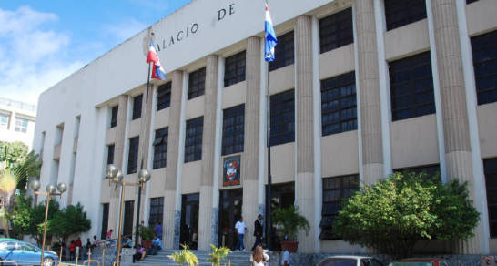

Arrestan a cuatro empresarios por supuesto fraude de RD$1,600 millones

Los detenidos son los directivos de la Corporación de Crédito Oriental S.A.La Fiscalía del Distrito Nacional allanó las oficinas de la Corporación de Crédito Oriental S.A. en Santo Domingo Este y en el Distrito Nacional, y apresó a cuatro empresarios por un alegado fraude de mil 600 millones de pesos. Los apresados son los empresarios Roberto Eduardo López Santiago, Robert Eduard López Núñez, Maybert López Núñez y Ana Cristina Duvercies. Mientras que la vicepresidenta de la entidad, Feliserbia Núñez Garrido, supuestamente escapó hacia Estados Unidos.Los imputados se encuentran detenidos en la cárcel del Palacio de Justicia de Ciudad Nueva a espera de que les conozcan medida de coerción en las próximas horas. De acuerdo con información de la Fiscalía, en contra de los apresados, quienes forman parte del consejo de administración de la Financiera Oriental, S.A. y Corporación de Crédito Oriental, S.A. se habían presentado decenas de querellas.La fiscal del Distrito Nacional, Rosalba Ramos, acogió las querellas depositadas por los abogados César Amadeo Peralta, Fidel Pichardo Baba, Leo Sierra Almánzar, Carlos Salcedo, Gustavo Biaggi Pumarol y Wanda Perdomo.